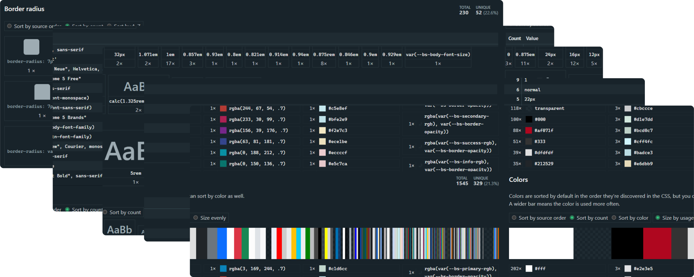
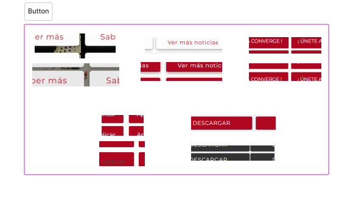
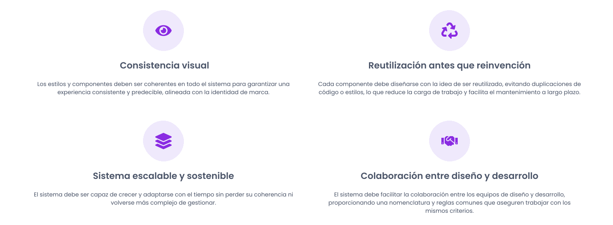
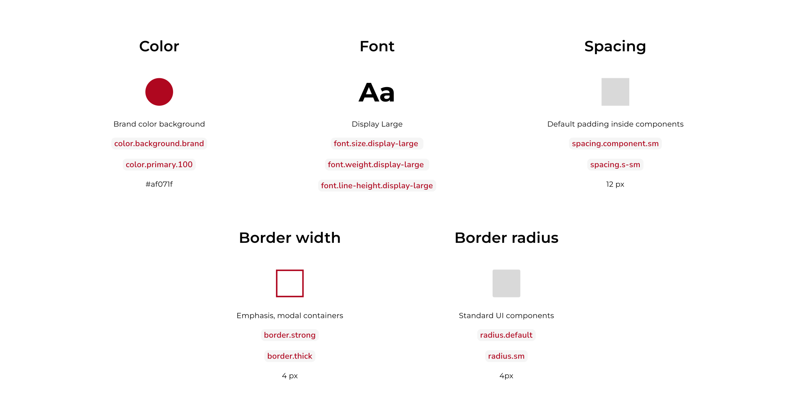
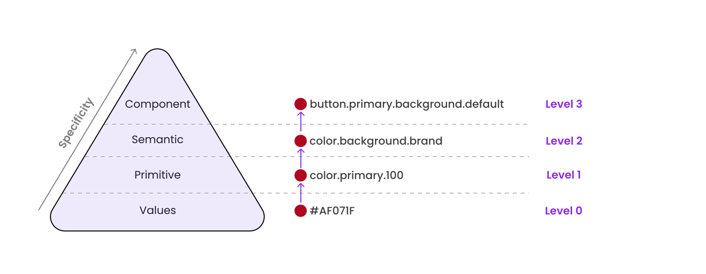
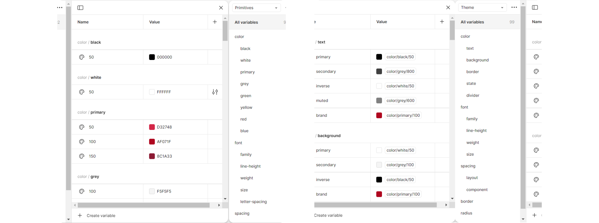
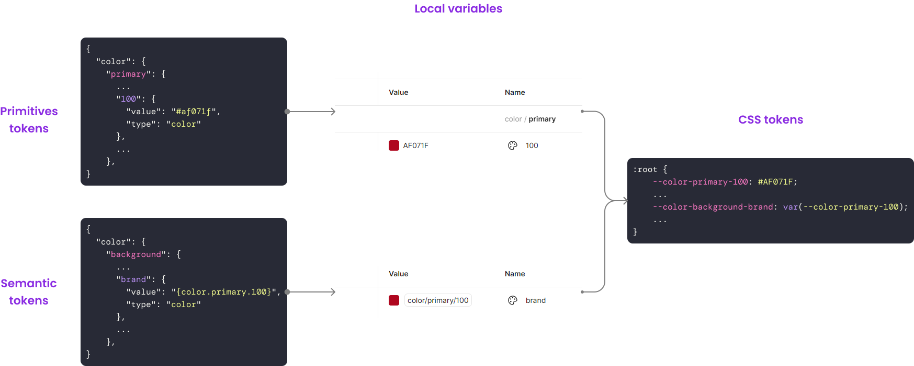

¿Cómo transformar estilos visuales inconsistentes en una estructura lógica que sirva de base para un sistema de diseño escalable?
Creando design tokens como forma de estructurar las foundations visuales de un producto existente y preparar el terreno para un design system coherente y mantenible.
01. Descubrir, entender y empatizar
Comprendiendo el desafío y los objetivos de la investigación
Entender cómo se aplican colores, tipografías, espaciados y otras categorías visuales en la web actual.
Evaluar si el CSS es coherente visualmente y mantenible desde desarrollo.
Identificar inconsistencias y repeticiones que puedan convertirse en tokens reutilizables.
Detectar necesidades tanto de diseño como del equipo de desarrollo para alinear diseño y código.
Investigación secundaria
Auditoría de estilos CSS
Se realizó una auditoría de estilos CSS de la web oficial utilizando las herramientas de Project Wallace y CSS Stats, detectando más de 300 colores únicos (21.3%), más de 90 tamaños de fuente (36.9%) y múltiples inconsistencias. Estos hallazgos demostraron la necesidad de unificar criterios visuales con el obejtivo de mejorar tanto el mantenimiento como la escalabilidad del producto digital.

Análisis perceptual
Se realizó un análisis perceptual de la interfaz para detectar estilos y patrones visuales, así como diferencias en su aplicación entre componentes similares (como botones, cards o pestañas). Estas inconsistencias afectaban a la coherencia visual y, por tanto, a la experiencia de usuario. El análisis permitió identificar los criterios a definir y los casos donde debían aplicarse cada uno de estos criterios.

Hallazgos de la investigación
Se detectó una alta fragmentación tanto visual como técnica, con más de 300 colores, casi 100 tamaños de fuente y múltiples valores de border-radius.
Se identificó una redundancia de estilos como colores y espaciados muy similares aplicados, además, de forma manual.
Aunque se utilizan tokens locales a nivel de componente, se identificó la ausencia de tokens semánticos que sirvan de base para esos valores, lo que dificulta la interpretación del diseño.
Ausencia de documentación sobre reglas globales de estilo y componentes.
02. Definir el desafío
Planteamiento del problema
Los equipos de diseño y desarrollo de la organización necesitan poder trabajar conjuntamente en la web oficial utilizando estilos y componentes definidos sobre criterios claros, ya que actualmente existen inconsistencias visuales, duplicaciones de código y la ausencia de un sistema de diseño común que facilite la colaboración y el mantenimiento del producto digital.
03. Idear la solución
Enfoque MVP para resolver el planteamiento del problema
Definir los design tokens fundamentales (primitivos y semánticos), de colores, tipografías, espaciados, etc. para asentar las bases de un design sytem común.
Crear una estructura organizada de foundations para que cada elemento esté claramente definido y separado, permitiendo que el sistema pueda crecer fácilmente añadiendo nuevos valores sin afectar los existentes.
Elaborar documentación básica para guiar el uso de los tokens, asegurando que todos los equipos implicados comprendan cómo aplicarlos correctamente.
Principios de diseño

Categorías tokenizables
El primer paso para construir las foundations de un sistema de diseño bien estructurado ha sido definir qué categorías iban a ser tokenizadas. Esta categorización se ha basado tanto en los estilos existentes encontrados en la web como en las mejores prácticas recomendadas para design systems.

Sistema de tokens
Tras identificar las categorías tokenizables, definí un sistema de tokens siguiendo las buenas prácticas recomendadas en la industria. Este sistema se estructura en tres niveles: Nivel 1 - Tokens primitivos (ej. color.primary.100), que funcionan como materia prima del lenguaje visual, pero no se usan directamente en diseño; Nivel 2 - Tokens semánticos (ej. color.background.brand), construidos a partir de los primitivos y con un propósito funcional en la interfaz y sí que se utilizan en diseño; y Nivel 3 - Tokens específicos de componentes (ej. button.primary.background.default), definidos a partir de los semánticos, aunque este se abordará en fases posteriores del proyecto.

04. Diseñar con propósito
Foundations
Creación de variables en Figma
Se crearon en Figma las variables del sistema de diseño utilizando Tokens Studio, organizadas en colecciones de Primitives y Theme, sentando así las bases visuales y funcionales del sistema.

Documentación visual de las foundations
Esta documentación visual recoge de forma estructurada las foundations del sistema: colores, tipografía, espaciado, bordes, etc., incluyendo sus valores, así como los tokens primarios y semánticos definidos. El objetivo es servir de referencia compartida entre los equipos de diseño y desarrollo, resolviendo las inconsistencias actuales y facilitando una implementación coherente, escalable y fácil de mantener.
En el ejemplo siguiente se muestra cómo los tokens de diseño fluyen desde su definición en formato JSON (tokens primitivos y semánticos), pasando por su implementación como variables locales en Figma mediante Tokens Studio, hasta su exportación como variables CSS (custom properties) en :root. Esto permite su uso directo en desarrollo, conectando las decisiones de diseño con el entorno de producción.

Aprendizajes y próximos pasos
Establecer una base visual y técnica común a través de tokens ha sido un paso clave para alinear criterios y trabajo entre diseño y desarrollo.
Trabajar con variables en Figma (usando Tokens Studio) ha facilitado la organización y consistencia del sistema.
El siguiente reto es llevar esta base de diseño a los componentes, aplicando los tokens y comenzando a documentar usos específicos.
También será necesario definir un proceso para mantener y hacer crecer el sistema con orden, asegurando que las futuras decisiones sigan la misma lógica.
Let's Work Together • Let's Work Together • Let's Work Together • Let's Work Together • Let's Work Together • Let's Work Together •